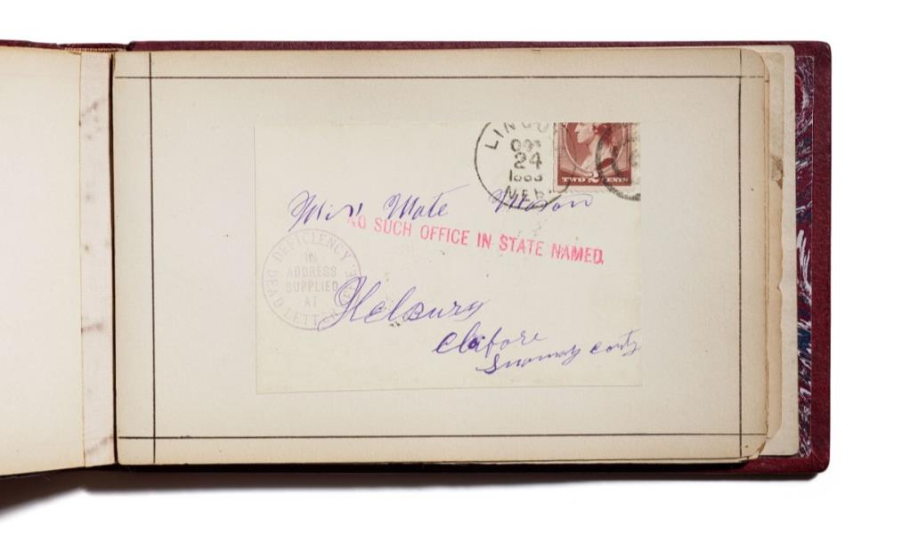
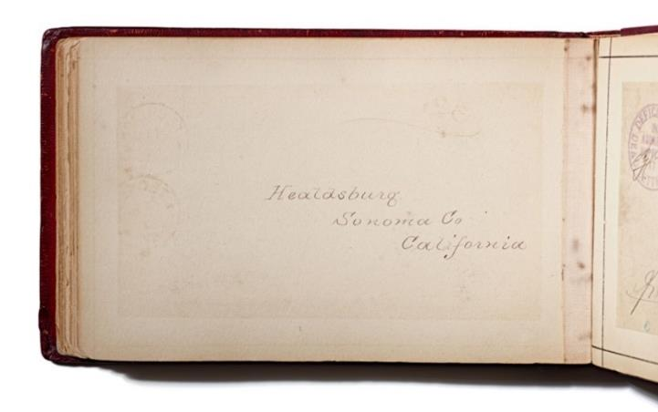

信寄不到，也退不回，最後會去哪裡？
從美國的「死信局」到今天的郵件復得中心，一件投遞失敗的郵件，還牽涉查找失主、拆閱界線，以及誰來負擔善後。
收件地址少了幾個字，寄件人又沒有留下地址，這封信該怎麼辦？在美國，這類既送不到、也退不回的郵件，曾由「死信局」（Dead Letter Office）處理。名字聽來像是埋葬場，職員的其中一項任務卻包括了再找一次？
一、投遞失敗之後，還有不同的去處
今天處理這類郵件的專責單位，是郵件復得中心（Mail Recovery Center，MRC）。郵件沒有準時出現，不一定已經成了「死信」。有些只是延誤，有些地址需要補正，有些能退回寄件人。美國郵政所說的 dead mail，定義在於兩條路都行不通：無法交給原來的收件人，也無法退回寄件人。這個關鍵差異解釋了為什麼有些郵件仍在一般投遞流程裡，有些則得改用查找失主的方式處理。
失敗也不全是字跡潦草造成的。在投遞、運送過程中，封套可能破損、標籤可能脫落導致原本足夠投遞的資訊因而不見了；也可能從一開始就少了必要地址。十九世紀的職員因此得面對寫錯地名、缺少州名、無人認領等不同情況。每一種問題，需要補足的線索並不相同。若只是把它們一概歸為「寄丟」，便難以知道還能在哪個步驟補救。
二、地址不完整，怎麼再找一次？
歷史上的死信局，會先從封套上能看到的資訊著手。職員要辨認手寫字，也要查地名、語言與街道資料，把看來不合理的組合逐一核對。美國國家郵政博物館保存的《Blind Reading》剪貼簿，收了郵戳為 1883 至 1884 年的二十一件信封剪貼。它們的問題包括「沒有這個郵局」「未寫州名」與「地址難以辨認」等。簿裡另有補全地址的標記，以及寫在背面的正確地址，讓人看出職員曾在哪裡補上缺口。


這本簿子的形成，也和郵件後來的去向有關。碰上特別難解、又成功送達的例子，職員會請收件人把信封寄回，加入辦公室的收藏。因此，眼前看到的是挑選過的成功案例，不是當年所有失敗郵件的樣本。它能顯示職員做成了哪些查找，卻無法單靠這本簿子算出整體成功率。要知道一個服務做得如何，既要看解決得漂亮的個案，也要知道還有多少東西沒能回到失主手上。
三、想找出失主，可以看多少內容？
封套線索用盡後，打開郵件可能提供另一條路。包裹裡的裝箱單，可能還留著外箱已看不到的姓名與地址、信內也可能有寄件人的資料。但郵件交給郵政處理，是出於信任與便利，並不表示寄件人願意讓所有工作者任意閱讀。博物館對歷史死信局的說明指出，獲准開啟的職員，只能閱讀查找寄收件人所需的最少內容。這項安排確立「為了完成投遞而查找」而非「自由查看私人通信」的嚴格限制，工作目的同時也是權限的終點。
今天，查找還包括比對兩邊的紀錄：一邊是中心收到的物品，一邊是使用者提出的遺失描述。USPS 的搜尋頁因此不只問追蹤號碼，也問容器樣式、內容的品牌、顏色、尺寸，以及有助辨識的照片。2021 年的聯邦公報公告，則列出相關系統會處理的寄收件人、物品描述與影像資料，並規定存取須符合職務需要。要讓物品更容易被認出，往往得收集更多資訊；如何限制使用與接觸範圍，便成為服務本身的一部分。
四、為什麼有人不願意收回自己的退件？
基於網路購物的發展，如今的復得中心還得處理電商物流造成的退件。2026 年 9 月公布的一份郵政監察長稽核報告指出，部分 Parcel Select 郵件原本的運費不包含退回服務，退件送回時，退件收受方需要另付郵資。若對方拒收，物品就可能繼續轉往復得中心。報告記錄到，有些業者持續拒收，物品的運送與處理費用只能由郵政吸收。這時，難題不再只是「不知道地址」，也出現知道地址卻沒有人願意接下退件與費用的狀況。
把所有這類包裹都送去中心，也會占用原本用來找失主的空間和工時。同一份稽核還指出，部分包裝受損、卻仍有辦法投遞的包裹，被不當地送進中心。依規定，這些包裹應先在原來的處理單位修補，再繼續投遞。郵方回應強調，因包裝受損而直接轉送中心，並非正式處理流程。這些發現讓人看見，末端單位的負擔，有一部分來自於上游各站是否根據 SOP 做好辨識、修補與退件。
五、沒人領回，不等於可以一直堆著
郵件復得中心有保管與查找的工作，也得決定查找結束後怎麼處理。依 USPS 的說明，未能領回的物品，會按性質進入捐贈、回收、銷毀或拍賣等不同流程。拍賣通常按批次出售，而非把每一件物品分件攤賣。每一種去向要分開審視，因為清出庫存、取得收入，和把原物交還失主，性質完全不同。對失主而言，原本寄出的紀念物是否回來，也很難只用處分所得衡量。
能否知道這些郵件的下落，取決於郵方保留了什麼紀錄。Motherboard 記者 Aaron Gordon 在 2022 年報導，曾透過資訊公開申請，向 USPS 索取拍賣物品資料。郵方提供了 2015 至 2019 年的批次與收入彙整，卻表示沒有記者要求的逐件物品、售價與批次售價紀錄。那次查詢因此能看見拍賣收入，卻無法逐一追溯賣掉了什麼。當物品無法交還失主，能留下多細的處分紀錄，便影響外界還能如何檢查、監督這項服務。
六、服務做到哪一步，才算完成？
2026 年的稽核，也把問題指向郵件復得中心如何報告自己的成效。中心原有的退回率，以符合退回條件的一部分包裹為計算對象；監察長認為，還應觀察所有送進中心的包裹有多少回到使用者手上。郵方則回應：原本的指標就是為可退回的包裹設計，把全部包裹放進去會扭曲這個指標。兩種算法關注的面向不同：前者看經篩選後的查找成果，後者還要看中心收到的東西，最後大多去了哪裡。報告中的這項爭議，也促使人再看到一個數字時，更該查明所謂「成功率」究竟計入了哪些對象。
這也是投遞服務比「把東西運走」多出來的責任。收進中心、完成登記、結束查詢、清空倉位，都可能代表某一道工序結束，卻不必然代表寄收件人的事情已經辦完。USPS 的搜尋說明也明白區分找尋郵件、申請退款與保險理賠，並不保證每件東西都能尋回。從失主的角度看，至少還需要知道目前找到什麼、還能做什麼，以及沒找到時會怎麼處理。當一個服務遇到例外，能否交代這些後續，往往比一句「已處理」更有幫助。
查證資料來源8 項
本文以美國郵政為例；歷史規定、現行服務說明、具日期的稽核與管理回應分開閱讀。
- Dead Letter Office，Lynn Heidelbaugh，Smithsonian National Postal Museum ↗
支持內容：歷史死信局如何從封套線索查找、何時開啟，以及只讀取查找寄收件人所需資訊的規定。
- Dead Letter Office Blind Reading album，館藏1984.1128.333.1–21，Smithsonian National Postal Museum ↗
支持內容：剪貼簿的二十一件信封、補正標記與收集成功案例的方式；作者身分不明。
- What is the USPS Mail Recovery Center?，USPS ↗
支持內容：復得中心的角色與未領物品按批次拍賣、捐贈、回收或銷毀等處理。
- Missing Mail and Lost Packages，USPS ↗
支持內容：搜尋所需的物品描述與照片；搜尋、退款及保險理賠是不同處理。
- Privacy Act; System of Records，Federal Register 86(8)，2021-01-13 ↗
支持內容：2021公告所述的搜尋與庫存比對、個資與影像類別，以及依職務需要限制存取的安排。
- Evaluating Mail Recovery Center Package Growth，USPS Office of Inspector General，2026-09-22，25-150-R26 ↗
支持內容：2026年稽核的退件郵資、拒收、受損包裹處理與成效指標，連同郵方回應一併閱讀。
- Post Office Auctions $8 Million Worth of Mail Annually, Has No Idea What It’s Selling，Aaron Gordon，VICE/Motherboard，2022-01-11 ↗
支持內容：2022年記者透過資訊公開取得2015–19拍賣資料的案例，不當作2026紀錄現況。
- Dead Letter Office Blind Reading Album Conversation Kit，Smithsonian American Women’s History Initiative ↗
支持內容：信封D與解答頁的對照，對應本文使用的同件館藏影像。
延伸探討
把故事帶回自己的思考
想像你交付了一件對自己很重要、對別人卻未必值錢的東西。如果對方沒能完成原本的承諾，你最希望得到什麼樣的後續：繼續找、清楚說明、補償，還是別的安排？你願意等到什麼時候，又會如何判斷對方真的負起責任？